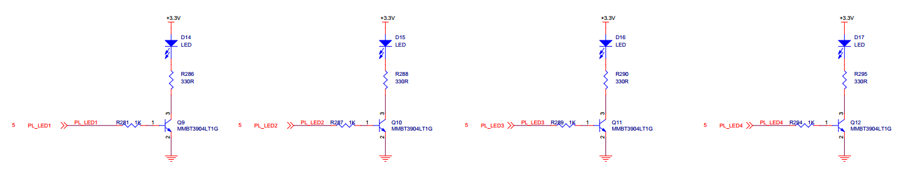
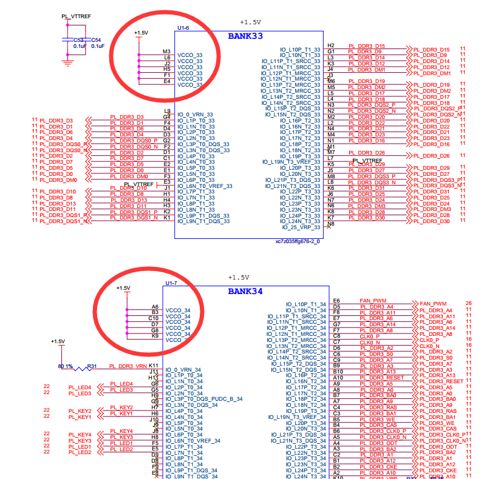

PL的“Hello World”LED实验#
实验VIvado工程为“led”。
对于ZYNQ来说PL（FPGA）开发是至关重要的，这也是ZYNQ比其他ARM的有优势的地方，可以定制化很多ARM端的外设，在定制ARM端的外设之前先让我们通过一个LED例程来熟悉PL（FPGA）的开发流程，熟悉Vivado软件的基本操作，这个开发流程和不带ARM的FPGA芯片完全一致。
在本例程中，我们要做的是LED灯控制实验，每秒钟控制开发板上的LED灯翻转一次，实现亮、灭、亮、灭的控制。会控制LED灯，其它外设也慢慢就会了。
LED硬件介绍#
{kind=link}
PL端只能直接控制PL端的LED，PS端的外设是无法直接控制的，我们可以看到4颗LED通过三极管连接到3.3V电源，当三极管导通LED就会亮，只要连接到三极管的IO为高电平，三极管就会导通。无论是学习FPGA还是学习ARM，基本的硬件知识还是要掌握，例如看原理图。
从原理图我们可以知道四个LED对应的ZYNQ芯片的管脚情况如下：
PL_LED1 —— F5
PL_LED2 —— E5
PL_LED3 —— G5
PL_LED4 —— G6
创建Vivado工程#
启动Vivado，在Windows中可以通过双击Vivado快捷方式启动

在Vivado开发环境里点击“Create New Project”，创建一个新的工程。

弹出一个建立新工程的向导，点击“Next”

在弹出的对话框中输入工程名和工程存放的目录，我们这里取一个led的工程名。需要注意工程路径“Project location”不能有中文空格，路径名称也不能太长。

在工程类型中选择“RTL Project”

目标语言“Target language”选择“Verilog”

点击“Next”，不添加任何文件

在“Default Part”选项中，器件家族“Family”选择“Zynq-7000”，封装类型“Package”选择“ffg676”,减少我们选择范围。在下拉列表中选择“xc7z035ffg672-2”,“-2”表示速率等级，数字越大，性能越好。
{kind=link}
点击“Finish”就可以完成以后名为“led”工程的创建。

Vivado软件界面

创建Verilog文件点亮LED#
点击Project Manager下的Add Sources图标（或者使用快捷键Alt+A）
{kind=link}
选择添加或创建设计源文件“Add or create design sources”,点击“Next”

选择创建文件“Create File”

文件名“File name”设置为“led”，点击“OK”
{kind=link}
点击“Finish”,完成“led.v”文件添加

在弹出的模块定义“Define Module”,中可以指定“led.v”文件的模块名称“Module name”,这里默认不变为“led”，还可以指定一些端口，这里暂时不指定，点击“OK”。

在弹出的对话框中选择“Yes”

双击“led.v”可以打开文件，然后编辑
{kind=link}
编写“led.v”,这里定义了一个32位的寄存器timer, 用于循环计数0~49999999(1秒钟), 计数到49999999(1秒)的时候, 寄存器timer变为0，并翻转四个LED。这样原来LED是灭的话，就会点亮，如果原来LED为亮的话，就会熄灭。编写好后的代码如下：
`timescale 1ns / 1ps module led( input sys_clk, output reg [3:0] led ); reg[31:0] timer_cnt; always@(posedge sys_clk) begin if(timer_cnt >= 32’d49_999_999) begin led <= ~led; timer_cnt <= 32’d0; end else begin led <= led; timer_cnt <= timer_cnt + 32’d1; end end endmodule |
编写好代码后保存,点击菜单File -> Save All Files
{kind=link}
添加XDC约束文件约束管脚#
Vivado使用的约束文件格式为xdc文件,xdc文件里主要是完成管脚的约束,时钟的约束, 以及组的约束。这里我们需要对led.v程序中的输入输出端口分配到FPGA的真实管脚上, 这需要准备一个FPGA的引脚绑定文件.xdc并添加到工程中。
点击Project Manager下的Add Sources

选择“Add or create constraints”选项，点击“Next”
{kind=link}
点击“Create File”按钮

在弹出的对话框里选择File type是XDC,“File name”为“led”, 点击OK按钮
{kind=link}
点击“Finish”完成
{kind=link}
这时在Project Manager界面下的Constraints目录的constrs_1目录下已经有了一个“led.xdc”文件
{kind=link}
双击打开这个led.xdc文件，在这个文件里添加以下的引脚定义
set_property IOSTANDARD LVCMOS15 [get_ports {led[3]}] set_property IOSTANDARD LVCMOS15 [get_ports {led[2]}] set_property IOSTANDARD LVCMOS15 [get_ports {led[1]}] set_property IOSTANDARD LVCMOS15 [get_ports {led[0]}] set_property IOSTANDARD LVCMOS18 [get_ports sys_clk] set_property PACKAGE_PIN J14 [get_ports sys_clk] set_property PACKAGE_PIN F5 [get_ports {led[0]}] set_property PACKAGE_PIN E5 [get_ports {led[1]}] set_property PACKAGE_PIN G5 [get_ports {led[2]}] set_property PACKAGE_PIN G6 [get_ports {led[3]}] |
下面来介绍一下最基本的XDC编写的语法，普通IO口只需约束引脚号和电压，管脚约束如下：
set_property PACKAGE_PIN “引脚编号” [get_ports “端口名称”]
电平信号的约束如下：
set_property IOSTANDARD “电平标准” [get_ports “端口名称”]
这里需要注意文字的大小写，端口名称是数组的话用{ }刮起来，端口名称必须和源代码中的名字一致，且端口名字不能和关键字一样。
电平标准中LVCMOS15后面的数字指FPGA的BANK电压，LED所在BANK电压为1.5伏，所以电平标准为“LVCMOS15”，时钟输入FPGA的BANK电压为1.8V，所以电平标准为“LVCMOS18”。
{kind=link}
完成后选择菜单File -> Save all files保存所有文件
编译工程#
编译的过程可以细分为综合、布局布线、生成bit文件等，这里我们直接点击“Generate Bitstream”,直接生成bit文件。

在弹出的对话框中可以选择任务数量，这里和CPU核心数有关，一般数字越大，编译越快，点击“OK”

这个时候开始编译，可以看到右上角有个状态信息，在编译过程中可能会被杀毒软件、电脑管家拦截运行，导致无法编译或很长时间没有编译成功。

编译中没有任何错误，编译完成，弹出一个对话框让我们选择后续操作，这里选项“Open Hardware Manger”，点击“OK”，当然，也可以选择“Cancel”，然后在左边导航栏选择“Open Hardware Manger”
{kind=link}
下载调试#
连接好开发板的JTAG接口到PC的USB，给开发板上电
在“HARDWARE MANAGER”界面点击“Open target”
{kind=link}
点击“Auto Connect”

可以看到JTAG扫描到arm和FPGA内核，还有一个XADC，可以检测系统电压、温度
{kind=link}
选择xc7z035_1，右键“Program Device…”
{kind=link}
在弹出窗口中点击“Program”
{kind=link}
等待下载

下载完成以后，我们可以看到4颗LED开始每秒变化一次。到此为止Vivado简单流程体验完成。后面的章节会介绍如果把程序烧录到Flash，需要PS系统的配合才能完成，只有PL的工程不能直接烧写Flash。
ZYNQ-7000开发平台 FPGA教程 - Alinx官方网站